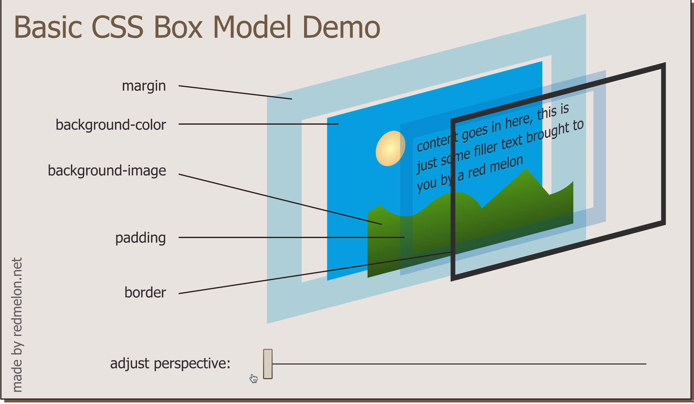

scroll
text in h3
paragraphs are bolock elements and take whole width
span, img, anchor tags are inline elements and take only as much required. we cannot change width of inline elements but we can change width of block elements. By setting display style property to inline they let next elements to follow them on the same line. ('display': 'inline'). setting display: 'inline-block' makes element have both properties
using span: spanned part non spanned part
Hiding visibilityThis word is displayed
This is not displayed. "display": "none"
This is not displayed "visibility":"hidden"
setting display to removes the element from being displayed. while visibility set to hidden just hides with an empty space visible
1) order of elements come from the html code.
2) childern sit on parents
this is a child para that sits on the top of a div parent element whose background is yellow. while this word written in a span element sits on its parent p element
3) positioning elements: elements are usually positioned by the default layout. These have position: static. by setting it to relative it can be moved relative to itself
the below images position is set to relative and is positioned 30px from left
we can set properties like top, bottom, left, right when position: relative
Absolute positioning4) Through absolute positioning we can change the coordinates(top, left, botom, right) relative to its parent
this is a parent div
........
sample paragraph
we can have only 1 id as a selector but we can have multiple classes to one selector as this one. Classes and id's are more specific selectors than tag selectors. Tag selectors properties can be over ridden by class or id selectors. Id's are unique throughout the html
psuedoClassHover over me

this is also the favicon
This is an example para with changed background
alligning text to center
Also centering element can also be done by setting margin: "auto"
para1
para2
para3